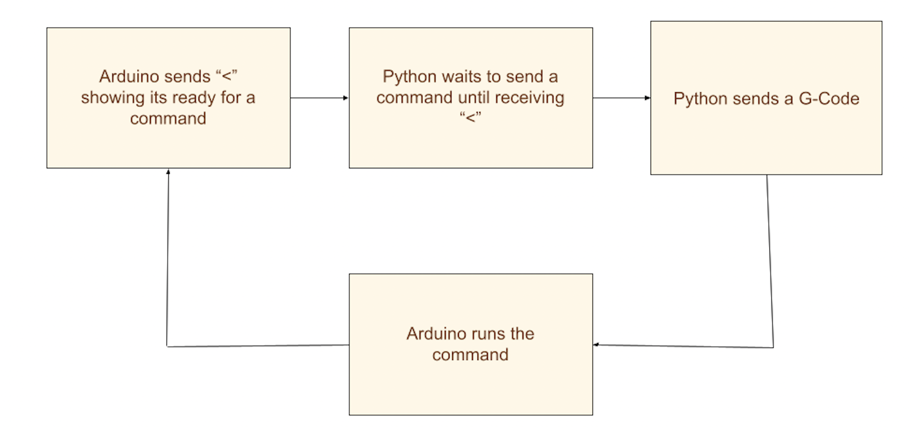

Software
The software is written in Python and is responsible for communicating with the firmware, generating latte art paths as well as creating an aesthetic and user-friendly interface for customers to choose their latte art.
Learn more about the specifics:
Communication
Communication is done between Python and Audriono through a serial connection using a USB cord. In order to successfully communicate, the port name and baud rate on the Arduino must match the port and baud rate names in GCodeCommands. As shown in the figure below, The Arduino initially sends “<” over the serial connection signaling to the Python script that it is ready to receive a command. Python functions wait to receive “<” before sending a single G-Code over serial to the Arduino. Arduino then reads and parses the G-Code, and executes the command. After completing the command, Arduino sends “<” showing it is ready for the next command.
G-Code
We used G-Code to send commands from Python to Aurdino. G-code is a programming language that can communicate with CNC machines. There is a table of the G-Code commands we programmed in the firmware section below. Then, each python function reads the ready “<” signal from serial and sends a single G-Code print statement. The python functions are named to indicate their function rather than their G-Code to make the code and writing paths easier for a user and human to read while all serial communication is done using G-code. The G-code commands and serial communication is done in the GCodeCommands.py file.
G-Code commands
| G-Code | Description | Python Command | Arduino Command |
|---|---|---|---|
| G1 X_Y_Z_T_ | Move to a given position on the global axis system with X,Y,Z set in mm and tilt set in degrees. | move_controller(xpos, ypos, zpos, angle) | move_motors(X,Y,Z,T); |
| G27 | "Zero" and recalibrate each axis by moving all the motors to hit the limit switches | go_home() | go_home(); |
| G28 | Move to the center of the coffee cup | go_cup_orgin() | cup_origin(); |
| M6 S_ | Pause the machine for a given amount of time in milliseconds | delay(ms) | wait(S); |
| M10 | Enable Z axis motor | enable_Z() | enable_Z(); |
| M11 | Disable Z axis motor | disable_Z() | disable_Z(); |
| M12 | Enable tilt motor | enable_T() | enable_T(); |
| M13 | Disable tilt motor | disable_T() | disable_T(); |
| M14 | Enable X axis motor | enable_X() | enable_X(); |
| M15 | Disable X axis motor | disable_X() | disable_X(); |
| M16 | Enable Y axis motors | enable_Y() | enable_Y(); |
| M17 | Disable Y axis motors | disable_Y() | disable_Y(); |
| M220 S_ | Change speed of X and Y axis motors | set_speed(speed) | set_speed(S);; |
| M221 S_ | Change speed of tilt motor | set_speed_T(speed) | set_speed_T(S); |
| M222 S_ | Change speed of z axis motor | set_speed_Z(speed) | set_speed_Z(S); |
| M380 | Enable the solenoid(valve) enabling liquid flow | enable_solenoid() | enable_solenoid(); |
| M81 | Disable the solenoid(valve) disabling liquid flow | disable_solenoid() | disable_solenoid(); |
| M100 | A list of G-Code commands printed in the serial terminal when the program starts up | help(); |
Path Planning
Path planning for each design is done in separate files with a list of python functions that send G-Code which ultimately creates the entire design. The python functions that send G-Code are imported from GCodeCommands.py to three design files:
- Base.py: every design calls Base first to add a layer of milk and create a blank canvas to put latte art on
- Heart.py: a design that creates a heart pattern in the latte
- Rosseta.py: which creates a rosetta pattern in the latte
For simple 2D movement in the X and Y plan, G-Code was automatically generated using functions like make_circle(radius, points) and make_sine(amplitude, frequency distance, points) which generate x and y coordinates based on the inputs. The coordinates of the shape are then added into the move_controller(xpos, ypos, zpos, angle) function which sends G-code for those positions.
At the beginning and end of the script, we enable and disable motors based on whether they are currently using them. This helps prevent the motors from overheating. The majority of G-Code was written by hand due to the complexity of latte art motions. Moreover, each function was finetuned through numerous rounds of testing.
GUI
A goal of the project was to create an aesthetic and easy to operate graphical user interface. The design including colors, buttons, font, and background were created using Canva, and the implementation was done in Python using pygame.
Code Architecture for GUI

In total, there are four classes that were made for the latte art user interface. In the diagram, the boxes in green represent the classes made for the buttons. The parent class, Button(), contains functions that are universal for all the button objects, such as positioning the button on the screen and displaying the button on the screen. One of the child classes, NavigationButton(), contains all the navigation buttons that the user can interact with to switch between different pages when clicked. These buttons include a start button, next button, and back button. The other child class, DesignButton(), contains buttons that are meant for design purposes. For example, when a button is clicked, a border will encapsulate it to indicate the user has clicked that button.
The fourth class is Background(), which loads all the different background images for the interface. This class also has a display function that displays the correct background image on the screen.
GCode-Python is the name of the folder that contains the GCode commands to create different latte patterns. Heart.py and Rosetta.py contain the GCode commands on how to draw the heart and the rosetta respectively.
The button classes, the background class, and the GCode-Python files are all imported into another class called Menu(). The menu class contains all the different pages of the user interface, such as the home page, choose your design page, and done page. Each page is represented by a function, where the appropriate background image and buttons are displayed on the screen. If a navigation button is clicked, the function for the page the user is being navigated to is called. The menu class also takes note of which latte art the user chooses to have the machine draw, then calls the appropriate function from one of the GCode-Python files.
Finally, the menu class is imported into the LatteUI.py file, which represents the main file where the menu object is created. The LatteUI.py file is where the code is run from.
GUI Architecture

Add In
UI INTERFACE PAGES
The user can interact with the latte art machine through a user interface that was created using pygame. A parent class called Button() was created to create buttons for the user to interact with, along with subclasses called NavigationButton() and DesignButton() to differentiate between buttons meant to navigate and buttons meant for design purposes. A class called Menu() was created in order to switch between pages if certain buttons are clicked.
The user is first taken to the home page by calling a function named home() within the Menu() class. The home page has the name of our robot and a short description.

The start button is an object of the NavigationButton() subclass. When clicked, the user will be taken to the choose page by calling a function named choose() within the Menu() class.

The user can choose a latte pattern by selecting one of the latte images below. Each latte image is actually a button created within the DesignButton() subclass. When one of the latte buttons is clicked, a border shows up around the selected latte.


The back button is an object of the NavigationButton() subclass, which will take the user back to the home page. The next button is another object of the NavigationButton() subclass, which only displays if the user chose one of the latte buttons. After clicking next, the user is then taken to the checklist page by calling the checklist() function within the Menu() class.

The back button is an object of the NavigationButton() subclass, which will take the user back to the choose page. The user can interact with the checklist by clicking the checkboxes. Each check mark is an object of the DesignButton() subclass. When clicked, the checkmark will display itself.

The start button will only display if all three boxes are checked. The start button is another object of the NavigationButton() class, which will take the user to the waiting page by calling the waiting() function within the Menu() class when clicked.

The waiting page is the only page the user can’t navigate out of. This is because this is when the user’s choice of latte art is sent to our robot, which draws out the chosen design. When the robot is done drawing the latte art, the user will automatically be taken to the done page by calling the done() function within the Menu() class.

The home button is an object of the NavigationButton() class, which will navigate the user back to the home page when clicked so the user can use the machine again.
Code Architecture

Add In
- © Untitled
- Design: HTML5 UP